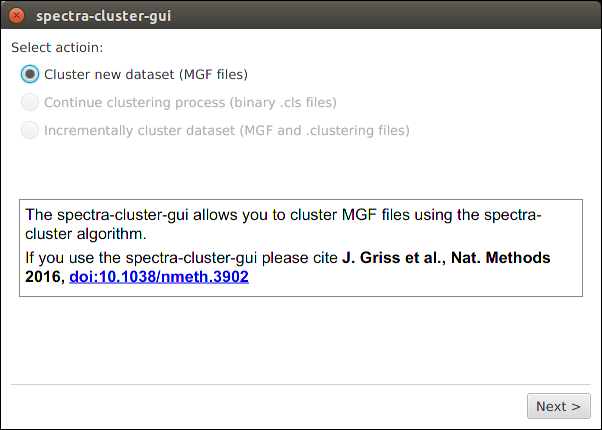
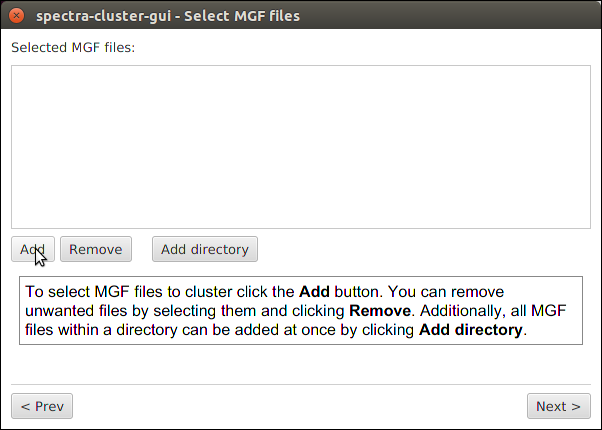
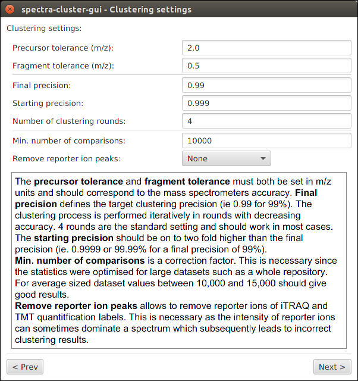
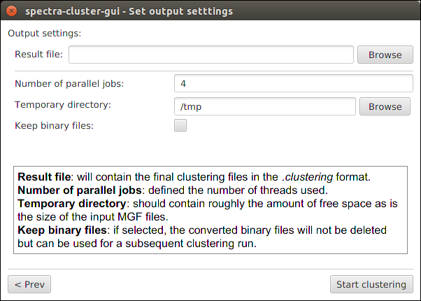

How to cluster MS/MS data¶
This tutorial explains how to cluster MS/MS data using the spectra-cluster-cli command line tool.
Preparing your data¶
The peak list files must be present in the MGF format.
Use ProteoWizard’s msconvert tool to convert your peak list data from other formats. For raw files, do not forget to enable the “peak picking” filter.
For this tutorial, let’s assume that your data looks like this:
C:\ms_data\
sample_1.mgf
sample_2.mgf
sample_3.mgf
Searching your data¶
Many of the spectra-cluster toolsuite’s analysis tools work with identification data.
To add identification data, first search the above created MGF files with the search engine of your choice (currently supported are MSGF+, X!Tandem, MSAmanda, and Scaffold).
Important: You must use the above created MGF files as input for your search engine. Otherwise the identification data cannot be mapped to the spectra correctly.
If you use X!Tandem you must enable the output in the mzIdentML format by adding the following option to your XML configuration file:
<note type="input" label="output, mzid">yes</note>
After this step, your files should be prepared similar to this:
C:\ms_data\
sample_1.mgf
sample_1.mzid
sample_2.mgf
sample_2.mzid
sample_3.mgf
sample_3.mzid
Merging identification data¶
For the spectra-cluster pipeline tools to integrate your identification data with the clustering results the identification data needs to be merged with your MGF files.
This is done using the mgf_search_result_annotator tool which you can download as part of the spectra-cluster-py (download link) tools.
For this example, we assume that you have copied the mgf_search_result_annotator.exe into the directory containing your data.
The mgf_search_result_annotator tool is a command line tool. To use it,
you first need to open the command line. On Windows, for example, press the
[Windows Key] + [r], enter cmd and press [Enter].
Next, you have to navigate to the directory containing your search results. In our example this would look like this:
C:\Documents and Settings\User> cd \
C:\>cd ms_data
C:\ms_data>
Now, to combine your search results with your peak list files you have to execute the following command (Note: you have to adapt the format to your search engine. For more information see the mgf_search_result_annotator documentation):
C:\ms_data>mgf_search_result_annotator.exe --format MSGF+ --input sample_1.mgf --search sample_1.mzid --output sample_1_annotated.mgf --fdr 0.01 --decoy_string "DECOY"
This command has to be launched for every file (simply adapt the input filename, search result filename, and output name).
Running the clustering¶
Running the actual clustering job is most likely the easiest job once the MGF files are created.
For this tutorial, we will use the spectra-cluster-gui to run the spectra-cluster algorithm.
You can download the latest release of the spectra-cluster-gui here. In able to launch the spectra-cluster-gui you need to have Java installed on your computer.
Once you have downloaded the spectra-cluster-gui tool, simply extract the zip file
into any folder and double-click the spectra-cluster-gui-[VERSION].jar file (Note:
[Version] will depend on the current version of the spectra-cluster-gui tool).
After launching the tool, you need to select “Cluster new dataset” to cluster your files.
Next, simply select the annotated MGF files as input files for the clustering.
Clustering settings¶
The default values set in this screen should be working for the vast majority of datasets. The two values that should be adapted are:
- Precursor tolerance: Set this value to the precursor tolerance that you would use for your search
- Fragment tolerance: Again, set this value to the fragment ion tolerance you would use for your search
Note: If you used a labelled approach you also need to select the appropriate reporter ion type for the “Remove reporter ion peaks” option.
Launching the clustering¶
Simply select where your outputfile should be saved. All other values can generally be left at their default.
